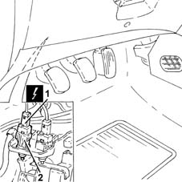

1060G42 clutch pedal switch - r r
- Path
- Procedures > 10 ENGINE > 1060 DIESEL FUEL INJECTION > 1060G pressure pump electric control > 1060G42 clutch pedal switch - r r
- Kind
- repair procedure (removal / refitting; the operation number is the code)
- Applies to
- engines: 1.3 JTD; all production periods
- Interactive page
- https://sloeber94.github.io/elrnDB-lYpsln/en/#/2429053
Applies to: engines: 1.3 JTD; all production periods
 Removing
Removing
 Refitting
RefittingEnsure that the ignition key is in OFF position, then disconnect the battery negative terminal (-).
 | Name | Connector |
|---|---|---|
- | Battery |
1. Disconnect the electrical connection from the clutch pedal switch.
| Name | Connector |
|---|---|---|
1 | Clutch pedal switch |
2. Rotate the clutch pedal switch and remove it.

Applies to: engines: 1.3 JTD; all production periods
Refitting
RemovingPlace the clutch pedal switch in its housing rotating it in a clockwise/anti-clockwise direction until the retainer tooth can be heard clicking into the seat on the braket.
Connect the electrical connection to the clutch pedal switch.
Connect the negative (-) battery terminal.